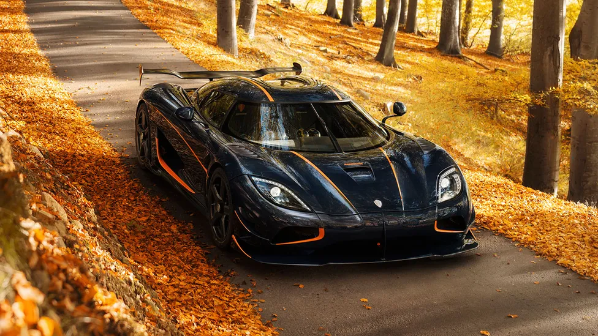
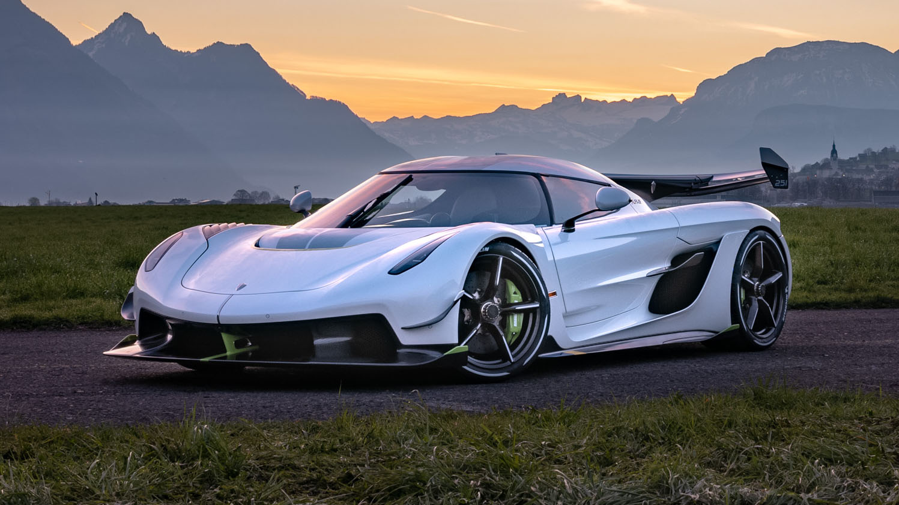
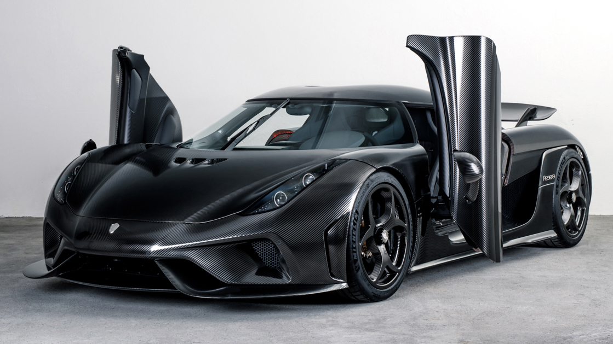
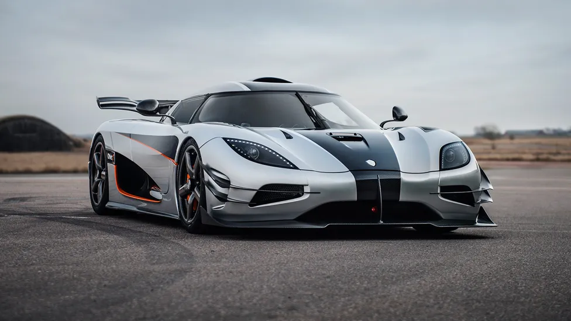
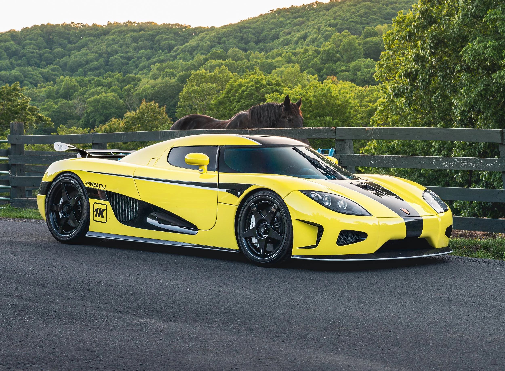
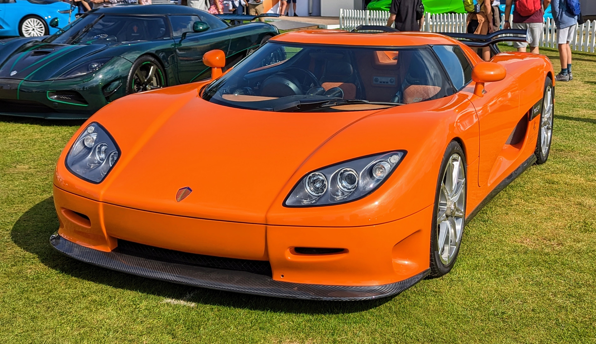
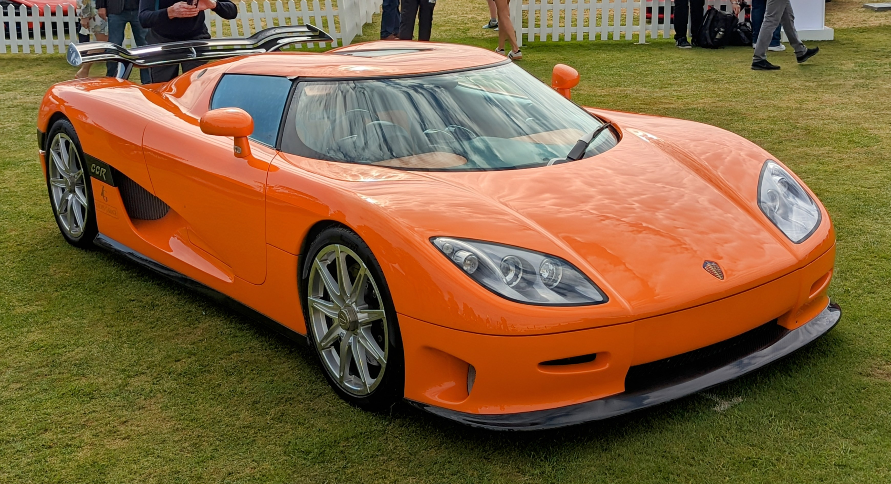
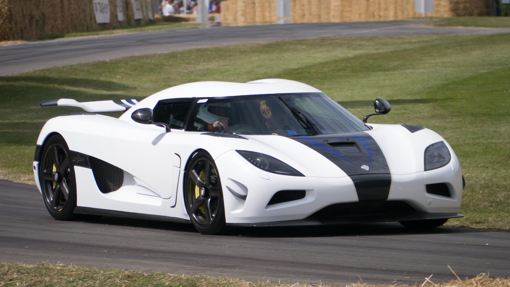
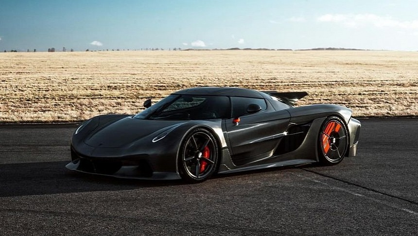
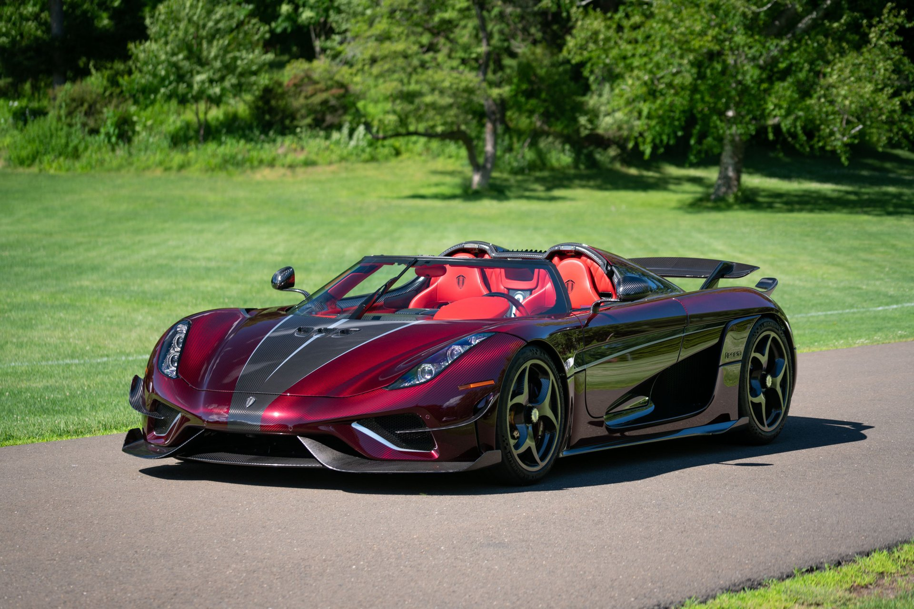

Koenigsegg
The Absolute Edge
Founded: 1994
Country: Sweden
Icon: Agera, Jesko
300+ mph
The Absolute Edge
Koenigsegg is the ultimate expression of Swedish engineering insanity. Founded in 1994 by Christian von Koenigsegg, then just 22 years old, the company set out to build the world's ultimate hypercar.
Christian's childhood dream was to build his own car. At 22, he started Koenigsegg Automotive with no automotive experience – just vision and determination. The first prototype, the CC, was shown in 1996.
The first production car, the CC8S (2002), was a 655 hp V8 monster. It set the template – carbon fiber construction, extreme power, and innovative engineering.
The CCR (2004) took the top speed record at 242 mph. The CCX (2006) was refined for global markets. But the 2010 Agera was a leap forward.
The Agera R (2011) and Agera RS (2015) pushed boundaries. The Agera RS set the production car speed record in 2017: 277.9 mph (447.2 km/h). It also did 0-249-0 mph in record time.
The Regera (2016) was a different approach – a hybrid with 1,500 hp and no conventional transmission. The One:1 (2014) had 1,360 hp – a 1:1 power-to-weight ratio.
The Jesko (2019) takes engineering to extremes – 1,600 hp, 9-speed transmission with 7 clutches, and theoretical top speed over 300 mph. The Jesko Absolut is designed for pure speed.
Koenigsegg also develops revolutionary technologies – Freevalve (camless engines), the Light Speed Transmission (LST), and advanced aerodynamics. They're one of the most innovative automakers in the world.
"We don't build cars for the mass market. We build them for people who appreciate the absolute edge of technology and performance."- Christian von Koenigsegg

2015-2018
The record-breaker. 1,341 hp, 277.9 mph production car speed record. 0-249-0 mph in 33.29 seconds – world record.

2021-present
The ultimate track weapon. 1,600 hp, 9-speed LST transmission, massive downforce. Jesko Absolut for 330+ mph top speed.

2016-2022
The hybrid without a gearbox. 1,500 hp, direct drive, 0-248 mph in 20 seconds. Luxury and performance.

2014-2015
1:1 power-to-weight ratio. 1,360 hp, 1,360 kg. Only 6 built. Track monster.

2006-2010
First Koenigsegg for global markets. 806 hp, Top Gear tested.

2002-2003
The first production Koenigsegg. 655 hp, only 6 built. Set the template.

2004-2006
Took speed record (242 mph) in 2005.

2023-present
The first four-seat Koenigsegg. 1,700 hp, 2.0L three-cylinder + electric – insane.
The Agera RS is one of the most accomplished hypercars ever. In 2017, it set multiple production car records.
Only 25 Agera RS were built. They're among the most coveted modern hypercars.

The Jesko, named after Christian's father, pushes every boundary. Two versions: Attack (track focus) and Absolut (speed focus).

The Regera (Swedish for "to reign") is a different kind of hypercar. It has no conventional gearbox.
The Regera is also luxurious – leather, touchscreens, cup holders, and a frunk for luggage. It's a grand tourer with hypercar performance.

Camless engine technology. Each valve is individually controlled by pneumatic actuators. Allows infinite valve timing, cylinder deactivation, and 30% more power.
9-speed, 7 clutches. Can shift directly between any gears instantly. Used in Jesko.
No transmission in Regera. Electric motors for low speed, V8 direct drive at highway speeds.
Koenigsegg pioneered carbon tubs. Weighs only 70 kg, incredibly strong.
Active aerodynamics, double-diffusers, and massive downforce. Jesko generates 1,400 kg downforce.
Hydraulic system connects rear wheels for stability.